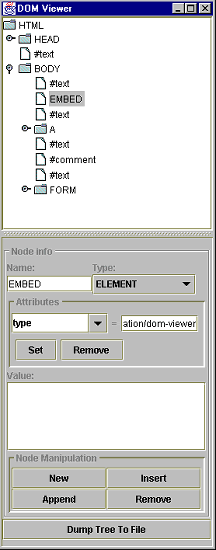
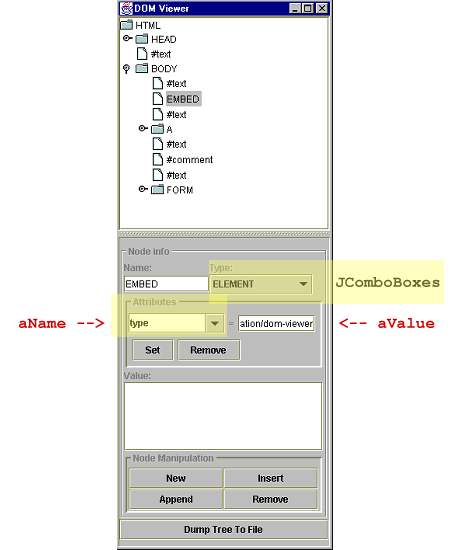
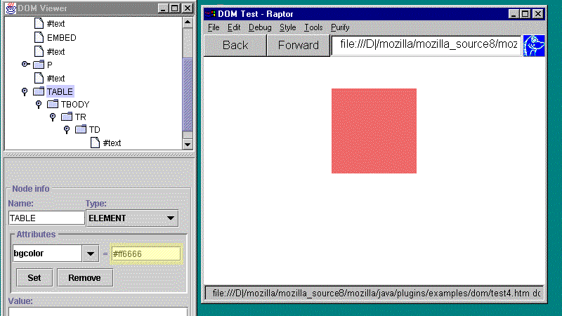

Pluglet Developers Guide
Pluglet Examples
Java Media Player (JMPlayer) Example
Overview
This is an example of a Pluglet that is a media player. It uses the MediaPlayer bean from the Java Media Framework. Note that a similar example could be given for an applet using the MediaPlayer, but there is an advantage here: the Pluglet is installed in the browser and ready to play, whereas the applet would have to download class files, causing considerable delay in playing the media.
Using Java Media Framework
The example uses one bean from the Java Media Framework
(javax.media.bean.playerbean.MediaPlayer)
and one interface (javax.media.ControllerListener).
MediaPlayer provides player capability for a range of media types
(.avi, .mpeg, .swf, .
mov ....) Typically the ControllerListener i
interface is implemented by a class whose objects want to be listeners to
events occurring on objects of another class; it has one method,
controllerUpdate(ControllerEvent event) that can be used
to respond in some way to a Controller event. A <
code>ControllerListener is added to a Controller v
ia the addControllerListener
(ControllerListener listener) method of the <
code>Controller.
(In our example, MediaPlayer is a Controller, s
since it extends javax.media.Controller, and <
code>Player is the class that implements
ControllerListener. Thus a Player
object gets notification of events from a MediaPlayer b
bean.)
For more information about the Java Media Framework, see http://jsp.java.sun.com/products/java-media/jmf/
JMPlayer Pluglet
The following is meant to provide an overview of how this Pluglet works.
Press the button to view the source code:
When the browser encounters a MIME type
for this Pluglet, PlugletEngine creates an instance o
of JMPlayer.
(Here the PlugletFactory implementation is
JMPlayer; the Pluglet implementation
is Player; and the PlugletStreamListener
implementation is JMPlayerStreamListener.)
The browser then calls the initialize() method of
JMPlayer, passing it an instance of
PlugletManager. Then it calls the createPluglet()
method of JMPlayer, returning an instance of
Pluglet, i.e., an instance of Player.
Note that Player implements ControllerListener
in addition to Pluglet.
The browser then initializes the Player instance, passing
it an instance of PlugletPeer, provides it with a frame
by calling setWindow(Frame frame), and calls start()
. start() creates the MediaPlayer
object called player (not to be confused with the
Player class), creates a new Panel object
called panel, and adds player to panel
. The stage is now set for action.
When data is ready to be read, the browser calls the newStream()
method of Player, returning listener,
an instance of JMPlayerStreamListener. newStream()
also calls listener.setPlayer() and passes a
reference to the current Player object to it. (This would
be the new Player created by the factory.) This method sets
the variable jmp (of type Player) of
JMPlayerStreamListener to the Player that is
passed.
When the media begins loading and the brower calls onStartBinding()
, jmp.PlayFile() is called with the URL for the data
stream. (The boolean returned is checked and an error is
indicated if the value is false; i.e., if player
is unable to handle the MIME type of the URL.) PlayFile()
sets the location of the media (URL), and if all is well it
then adds the Player (jmp of
JMPlayerStreamListener which called playFile())
as a listener to the MediaPlayer (player).
Finally, it calls realize() on player.
(realize() constructs the media-dependent portions of the
Controller.)
(Note that jmp mentioned above was set in
JMPlayerStreamListener when the Player
object was passed to listener.setPlayer() in the
newStream() method of Player. Thus
jmp is the new Player object created
initially by the factory, JMPlayer.)
Since the Player, jmp, is now a listener
(ControllerListener) to player,
jmp gets notification when RealizeCompleteEvent
occurs, and controllerUpdate() then calls
player.prefetch(). When prefetching is complete, a
PrefetchCompleteEvent is generated, indicating that the
controller has preloaded media data and acquired the exclusive-use
resources it needs to start. When a PrefetchCompleteEvent
occurs, dimensions are set for the Panel,
player.start() is called (not to be confused with the
start() method of Player), and the frame appears.
If all goes well, the media is played.
Java DOM Viewer Example
Overview
The Java
DOM Viewer (DOMViewer) Pluglet allows you
to view a document as a tree structure of object nodes that compose
the document. It is an application launched as a Pluglet when a page
is loaded containing an EMBED or OBJECT
element specifying TYPE="application/dom-viewer".
The EMBED or OBJECT element is embedded
in the page as the first child element of the BODY element.
This Pluglet depends on the Java DOM implementation, i.e., it acquires access to the DOM via the
implementation of the w3c Java Bindings to the DOM. Thus you must h
have built the Java DOM for this example to work, and
you must have the org.w3c.dom classes in your
CLASSPATH.
The example uses three files with a total of six classes and one interface:
file: DOMViewFactory.java
class DOMViewerFactory
interface DOMTreeNotifier
class DOMTreeModel
class DOMCellRenderer
class DOMViewer
file: DOMAccessPanel.java
class DOMAccessPanel
file: DOMTreeDumper.java
class DOMTreeDumper
To view the source code, select:
Note: The information that follows provides an overview of the code.
DOMViewerFactory.java
The DOMViewerFactory class, which this file contains,
implements Pluglet Factory. Thus it creates an instance
of DOMViewer, which implements Pluglet.
The initialize() method of DOMViewer does
much of the work in two code blocks:
In the first code block, the goal is to set the root node for the
DOM tree. This is accomplished by getting the PlugletTagInfo<
for the PlugletPeer, next getting the DOM element for
the Pluglet via the getDOMElement()
method of PlugletTagInfo, then getting the
Document (doc object) for the element via the element's
getOwnerDocument() method. Finally, the element for
Document doc is obtained via the getDocumentElement()
method of Document. This element is then set as
the root node (rootNode).
In the second code block, an instance of DOMTreeModel is
created with rootNode passed as node.
(DOMTreeModel implements javax.swing.tree.TreeModel
and the DOMTreeNotifier interface that is defined
in DOMViewerFactory.java. TreeModel includes
methods for adding listeners and obtaining basic information about
a tree; DOMTreeNotifier includes methods for notification
when a tree has changed.) The instance is treeModel.
treeModel is then passed to a new instance of
DOMAccessPanel called elementPanel, so that
the tree can be manipulated. (DOMAccessPanel is discussed
in the next section.) It is also passed to a new instance of
JTree called tree so that it can be viewed.
tree adds elementPanel as a selection listener
and sets a cell renderer. tree is then added to a new
JScrollPane and then the JScrollPane instance
(treePane) is added to a new JPanel
(panel).
The setWindow() method of the Pluglet then
adds panel and elementPanel to a
JFrame object (frame) via a vertical
JSplitPane object, displaying panel on the
top (with the tree structure) and the various buttons, fields, and
combo boxes of elementPanel below for manipulation.
Below is the DOMViewer for test.html, which is
included in the Pluglet examples/dom
directory:

Note that the newStream() method returns a null
object; there is no data stream involved in this example. start()
, stop(), and destroy() are included
but have neither variables nor methods defined.
DOMAccessPanel.java
DOMAccessPanel.java extends JPanel and
implements three listener interfaces:
ActionListenerItemListenerTreeSelectionListener
The constructor sets up the various panels, text areas, and buttons used to manipulate the DOM.
An instance of DOMTreeNotifier is passed to the
constructor, which allows an instance of DOMAccessPanel
to discover if the tree has changed in some way.
ActionListener
To implement ActionListener, DOMAccessPanel
implements actionPerformed(ActionEvent e).
actionPerformed(...) responds to the various button-
accessible events on the panel (Set, Remove, New,
Insert ...).
ItemListener
To implement ItemListener, DOMAccessPanel
implements itemStateChanged(ItemEvent e). An
ItemEvent occurs when an item -- in this case a node --
is selected or deselected. itemStateChanged() then
responds to that event.

If node is not null and there is a selected
item in the Attributes combo box (bottom left JComboBox
as shown above highlighted in yellow), then the Set button
(type JButton) is enabled. If node.getAttributes()
returns a NamedNodeMap (e.g., not null)
and the index of the selected named attribute is 0 or greater
(aName.getSelectedIndex() >= 0), then the value
of the attribute is set as follows:
aValue.setText(attrMap.item(aName.getSelectedIndex()).getNodeValue()
);
where attrMap = node.getAttributes()
Thus the text for the value (aValue of the
JTextField) is set by (1) getting the index of the name
(aName); (2) passing that to the item()
method of the NamedNodeList (of attributes), which returns
the node (attribute-node); (3) then applying the getNodeValue()
method of node to the attribute-node. The user
can also enter a new value, and with the Set button enabled,
the actionPerformed() method will update the value when
Set is pressed.
TreeSelectionListener
To implement TreeSelectionListener, DOMAccessPanel
implement the valueChanged(TreeSelectionEvent e)
method. Then, when a TreeSelectionEvent occurs on the tree,
valueChanged() is passed the event and checks if a path
has been added via e.isAddedPath(). If so, the node
information for the last node in the path is updated.
valueChanged() then sets nodePath to the
new node path, and from the event it sets tree to the
source of the event.
The DOMAccessPanel class also contains methods to
update node information, create, insert, append, and remove a node,
as well as save the changes to a document. The saveDoc()
method uses the DOMTreeDumper class, which is discussed
next.
DOMTreeDumper.java
saveDoc() in DOMAccessPanel creates an
instance of DOMTreeDumper (if there isn't one already)
and calls the dumpToFile() method of DOMTreeDumper
, passing a file name and the document associated with the
node.
dumpToFile() then creates a new file output stream
(fos) and print stream (ps) and calls
dumpDocument(), passing to it the document
(doc). dumpDocument() then gets the document
element -- i.e., the root element of the document via the
doc.getDocumentElement() -- and calls dumpNode()
, passing the document element to it.
dumpNode() then gets the node type, as well as the node
name and value. type is ELEMENT_NODE (the element is
HTML element), so control is transferred to case
Node.ELEMENT_NODE and dumpAttribute(node) and
dumpChildren(node)get called.
The first method calls dumpNode() for each attribute of
the HTML element; the second method calls
dumpNode() for the children. If the children have
children, then the children will call dumpNode()
for all their children. Eventually, every node of every type in the
tree will be dumped.
DOM Demo
Below is a demonstation you can run showing how DOMViewer can change
DOM element attribute values on a web page. The demo here uses a
page containing a table with a single row and column that initally
has a background color of red (bgcolor=#ff6666), no
border (border=0), table height and width of 125
(height=125, width=125, and that is aligned
in the center of the page (align=center).
The demo shows the table attribute values being changed. First the value is highlighted in yellow as it is changed, then the Set button is highlighted as it is pushed, causing the new valued to take effect in the Mozilla browser. The Description field above the Start Demo button tells you what is happening.
